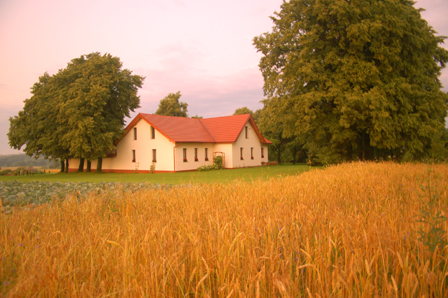

practical info
locations
The wedding:
Kościół pw. Świętego Idziego (St.Giles Church)
Tarczek 97
27-225 Pawłów
The reception:
Tarczek 124
27-225 Pawłów
Please confirm kindly your attendance by the 1st of August 2018
Kasia wzorek.k@gmail.com, +48 512 544 572
Rafał rafaljstepien@gmail.com, +45 52 71 73 75, +48 531 117 395
All our guests are guaranteed an overnight stay in the closest neighbourhood of the wedding house.
The band Sax and Six will play live music to brighten the atmosphere of the wedding reception. The band has in its repertoire, among others, pop music hits, disco music and funk. It will be a journey through hits of the seventies, eighties and nineties.
The wedding house is surrounded by a charming, old orchard, so comfortable shoes and a shawl for women will come in handy :)

Vegans and people on diet are asked to contact Kasia in order to adjust the menu to their needs.
interesting facts

We are very glad that we can invite you to the Świętokrzyskie Mountains – the region where Kasia grew up. We have to admit that we have a weakness for this place and this is why we chose Tarczek for our wedding.
For those who are interested in the history of the Świętokrzyskie Mountains some interesting facts below.
The wedding will take place in the Romanesque St. Idzi Church (St. Giles Church) in Tarczek. It is one of the oldest churches in Poland. Some say that it was built in 1067 and it has remained unimpaired till these days.

There is a wonderful view on the Świętokrzyskie Mountains from the church site. The mountains are famous for the legends told by chroniclers and the local people. Some legends say that the mysterious Łysa Góra (Bald Mountain) was where witches’' sabbaths took place few centuries ago. During the sabbaths, witches conducted secret witchcraft and dancing – that is what legends say. Whereas the existence of the site of the pagan worship is confirmed by the remains of the stone bank surrounding the top of the mountain.
The Benedict monastery of Holy Cross (Święty Krzyż) was founded in the place of the pagan cult. The monastery is dated back to 1006. It has been called Holy Cross since the 14th century, because the relics of Saint Cross have been kept there. Since then, it has been one of the most popular sanctuaries in Poland.
The prehistory of the region is also very interesting. The world’s oldest traces of dinosaurs were found in the Świętokrzyskie Mountains.
This region has been known for iron making. 300 000 furnaces used to melt iron have been found in this region until now. Melting iron in such considerable quantities was possible, because this region was very rich in lode. The knowledge about the techniques of melting iron has been was brought to the Świętokrzyskie Mountains by the Celts.

The forests of the region were a shelter and a base camp for one of the biggest guerrilla groups during the Second World War. Its most famous commander was major Jan Piwnik “Ponury”.
As you can see, there are a lot of interesting facts about the Świętokrzyskie Mountains and this is just a taste of the long and fascinating history of this region. Even though the mountains themselves are not very high, they are very mysterious, and that is why they are worth visiting. We think that a longer stay in this region is worth considering.
gallery
Dear guests, soon after the wedding photos will be posted here.